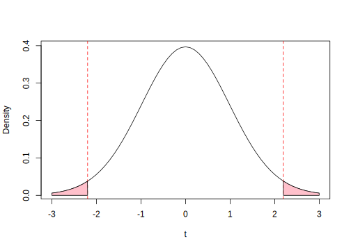

4.4 Empirical Application
We will use data from the following experiment: “Social Exclusion and Political Identity: The Case of Asian American Partisanship” by Alexander Kuo, Neil Malhotra, and Cecilia Mo (2016). The data set based on authors’ replication file here
- Research Question: Do feelings of social exclusion lead Asians to develop more negative feelings toward the Republican Party?
- Sample: 114: 61 self-reported Asian, 53 self-reported white
- Treatment: Manipulate feelings of social exclusion.
- Outcome: Difference in views toward Democratic vs. Republican Party
- Close-mindedness, ignorance, represent interests, likes/dislikes, feeling thermometer, party ID, and the average of these six
Let’s put this in the potential outcomes framework.
- For a given unit \(i\) what are the potential outcomes we are interested in?
- What is the \(\tau_i\) we are interested in?
- How are we going to estimate it?
4.4.1 Treatment
For those in the treatment group, a white female assistant to the research team says, “I’m sorry; I forgot that this study is only for US citizens. Are you a US citizen? I cannot tell.” If the subject was a US citizen, the assistant was instructed to say “OK, go ahead” and have the respondent start the survey; if the subject was not a US citizen, the assistant was instructed to pause and then say “it’s OK, go ahead.” Subjects then completed an online survey of their political attitudes.
Is this treatment a good treatment? Use the principles we discussed last section to evaluate this implementation.
Your ideas …
4.4.2 Analysis
Let’s load the data.
library(foreign)
exclusion <- read.dta("data/exclusion.dta")
## Explore data
## How many subjects?
## How many Asian vs. White subjects
## What proportion of subjects were treated?## Let's relabel the names to something sensible
names(exclusion)## [1] "v1" "v2" "v3" "v4"
## [5] "v5" "v6" "study2_avg" "treatment_cit"
## [9] "asiant"## v1 is difference between dem - rep in closed mindedness
names(exclusion)[1] <- "clmindeddr"
## v2 is difference between dem - rep in ignorance
names(exclusion)[2] <- "ingnorantdr"
## What if you don't want to have to find the number?
names(exclusion)[names(exclusion) == "v3"] <- "netlikesdr"
names(exclusion)[4] <- "piddr" # pid
names(exclusion)[5] <- "ftdr" # feeling thermometer
names(exclusion)[6] <- "repdr" # represents interests## Difference in means for the average
## Overall
d.i.m <- mean(exclusion$study2_avg[exclusion$treatment_cit == 1]) -
mean(exclusion$study2_avg[exclusion$treatment_cit == 0])
## Among whites
diff.whites <- mean(exclusion$study2_avg[exclusion$treatment_cit == 1 &
exclusion$asiant == 0]) -
mean(exclusion$study2_avg[exclusion$treatment_cit == 0 &
exclusion$asiant == 0 ])
## Among asians
diff.asians <- mean(exclusion$study2_avg[exclusion$treatment_cit == 1 &
exclusion$asiant == 1]) -
mean(exclusion$study2_avg[exclusion$treatment_cit == 0 &
exclusion$asiant == 1 ])We could also subset the data by race/ethnicity group. Let’s do that and then calculate our t-test and uncertainty by hand and using the R functions.
## Subset data for only Asian respondents
asians <- subset(exclusion, asiant == 1)
## t-test by hand for sample of Asian Respondents
## Calculating Standard error
## Get N for each group
n.asianst1 <- length(asians$study2_avg[asians$treatment_cit == 1])
n.asianst0 <- length(asians$study2_avg[asians$treatment_cit == 0])
## Get variance for each group
v.asianst1 <- var(asians$study2_avg[asians$treatment_cit == 1])
v.asianst0 <- var(asians$study2_avg[asians$treatment_cit == 0])
## Standard error
se.diffasians <- sqrt(v.asianst1/n.asianst1 + v.asianst0/n.asianst0)
## t-statistic
t.diffasians <- diff.asians/se.diffasians
## Degrees of freedom
t.df <- (se.diffasians)^4/
(v.asianst1^2/(n.asianst1^2*(n.asianst1 - 1))
+ v.asianst0^2/(n.asianst0^2*(n.asianst0 - 1)))
## p-value for two-sided test
p.asians <- (1- pt(abs(t.diffasians), t.df))*2We could visualize this according to the t-distribution with degrees of freedom equal to t.df: 50.73481 and our t-value of 2.196597 in the dashed red line.
To get our p-value in a two-sided test, we compute the area to the right of this and to the left of its corresponding value on the opposite side of the distribution (equivalently due to the symmetric nature of the distribution, we can take 2 \(\times\) either area). This area represents a probability, as the total area under the curve sums to 1.

A shortcut for computing the results is to use the R function. When learning a new function, you can access the help files in R by typing ?FUN into the console. Example: t.test.
## t-test the quick way!
asians.t <- t.test(asians$study2_avg[asians$treatment_cit == 1],
asians$study2_avg[asians$treatment_cit == 0])
whites <- subset(exclusion, asiant == 0)
whites.t <- t.test(whites$study2_avg[whites$treatment_cit == 1],
whites$study2_avg[whites$treatment_cit == 0])What are our conclusions about the hypothesis tests?
4.4.3 Heterogeneous Treatment Effects
The researchers believe that the size of the treatment effects will be different depending on the race/ethnicity of the participant.
- Should we compare the treatment effects among Asians vs. whites?
- If we do, can we say that being Asian caused a different reaction to microaggressions than being white?
- Overall, what are the limits of studying heterogeneity?
One approach to detecting a heterogeneous treatment effect is to use an interaction in a linear regression model.
As we discussed in the second section, when you have a treatment categorical variable, the regression coefficient \(\hat \beta\) represents the difference in means.
- When we interact this treatment indicator with a second variable, it will tell us how much the treatment effect varies according to the levels of that second variable.
Let’s start by calculating our treatment effects with the regression approach.
## Linear regression lm(y ~ x, data = nameofyourdataframe)
asians.r <- lm(study2_avg ~ treatment_cit, data = asians)summary(asians.r)whites.r <- lm(study2_avg ~ treatment_cit, data = whites)summary(whites.r)Why is the p-value slightly different here?
Try on your own, then expand for the answer.
We do not assume our groups have equal variances when we do the t-test, but regression relies on a pooled variance estimator, which differs slightly. We can recover the p-value in two ways.
## Indicate var.equal=T
asians.t.p <- t.test(asians$study2_avg[asians$treatment_cit == 1],
asians$study2_avg[asians$treatment_cit == 0], var.equal = T)
asians.t.p$p.value## [1] 0.02951252## By hand, use pooled estimator for variance/standard error/degrees of freedom
pooled.var <- ((n.asianst1 - 1) * v.asianst1 +
(n.asianst0 - 1)*v.asianst0)/ (n.asianst0 + n.asianst1 -2)
pooled.se <- sqrt(pooled.var) * sqrt( 1/n.asianst0 + 1/n.asianst1)
pooled.t <- diff.asians/pooled.se
pooled.p <- (1- pt(abs(pooled.t), (n.asianst0 + n.asianst1 -2)))*2
pooled.p## [1] 0.02951252Let’s now add the interaction term using the asterisk symbol:
## Using an interaction
het.r <- lm(study2_avg ~ treatment_cit + asiant
+ treatment_cit*asiant, data = exclusion)
summary(het.r)##
## Call:
## lm(formula = study2_avg ~ treatment_cit + asiant + treatment_cit *
## asiant, data = exclusion)
##
## Residuals:
## Min 1Q Median 3Q Max
## -0.52680 -0.07572 0.02925 0.09661 0.32821
##
## Coefficients:
## Estimate Std. Error t value Pr(>|t|)
## (Intercept) 0.67267 0.02976 22.606 <2e-16 ***
## treatment_cit -0.03200 0.04517 -0.708 0.4802
## asiant -0.07654 0.04244 -1.803 0.0741 .
## treatment_cit:asiant 0.12517 0.06153 2.034 0.0443 *
## ---
## Signif. codes: 0 '***' 0.001 '**' 0.01 '*' 0.05 '.' 0.1 ' ' 1
##
## Residual standard error: 0.163 on 110 degrees of freedom
## Multiple R-squared: 0.04907, Adjusted R-squared: 0.02314
## F-statistic: 1.892 on 3 and 110 DF, p-value: 0.1351## How do we interpret each coefficient?We now have a t-test for the interaction term, specifically. Be mindful that when you include an interaction term in a regression model, it changes the way we interpret the two other “main effects.”
4.4.4 Difference in Proportions
If we have a proportion as an average outcome instead of a mean, we may wish to adjust how we calculate uncertainty to better reflect the nature of a dichotomous outcome variable.
When we are comparing two proportions, we can use the prop.test function in R, which will adjust this calculation for us.
## Create a proportion variable where 1=dem, 0=rep
table(exclusion$piddr)##
## 0 0.200000002980232 0.400000005960464 0.600000023841858
## 2 7 12 28
## 0.800000011920929 1
## 35 30asians$dem <- ifelse(asians$piddr > .5, 1, 0)
## Calculate difference in proportions by hand
m1.asians <- mean(asians$dem[asians$treatment_cit == 1])
m0.asians <- mean(asians$dem[asians$treatment_cit == 0])
m1.asians - m0.asians## [1] 0.1163793## Use prop.test: NOTE THE DIFFERENT SYNTAX FROM t.test
## x is the "number of successes" i.e., number of 1's for each group
## n is sample size for each group
p.test.asians <- prop.test(x = c(sum(asians$dem[asians$treatment_cit == 1]),
sum(asians$dem[asians$treatment_cit == 0])),
n = c(length(asians$dem[asians$treatment_cit == 1]),
length(asians$dem[asians$treatment_cit == 0])))
## Note if you were to run the standard t-test,
## the difference would be the same but calculation of uncertainty is different
t.test(asians$dem[asians$treatment_cit == 1],
asians$dem[asians$treatment_cit == 0])##
## Welch Two Sample t-test
##
## data: asians$dem[asians$treatment_cit == 1] and asians$dem[asians$treatment_cit == 0]
## t = 1.1599, df = 52.547, p-value = 0.2514
## alternative hypothesis: true difference in means is not equal to 0
## 95 percent confidence interval:
## -0.08491716 0.31767578
## sample estimates:
## mean of x mean of y
## 0.8750000 0.7586207What do you conclude about the test?